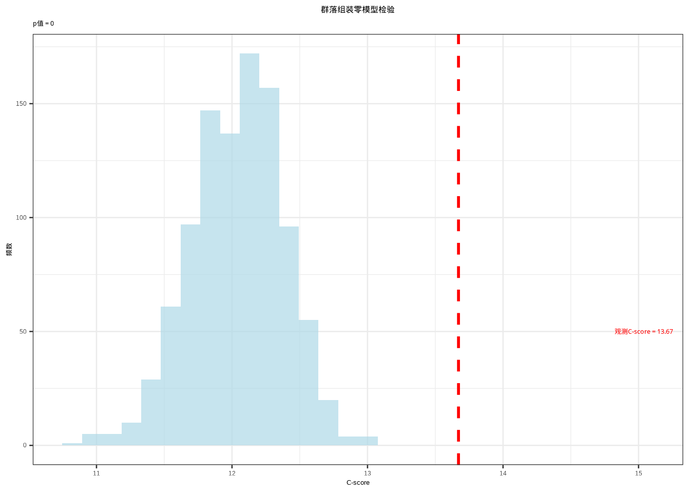
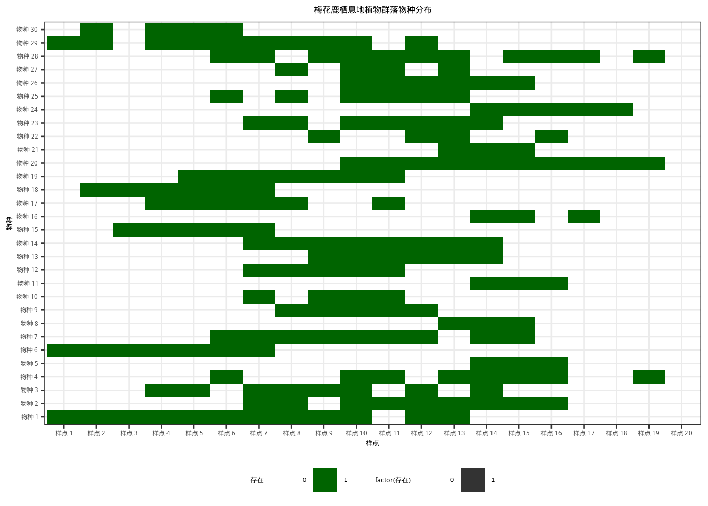
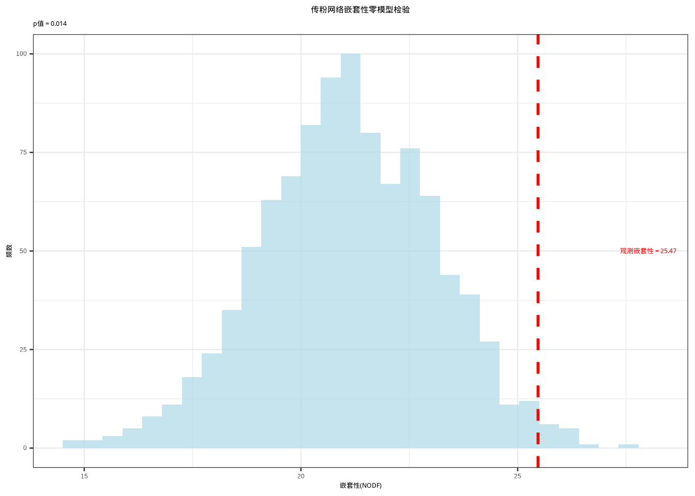
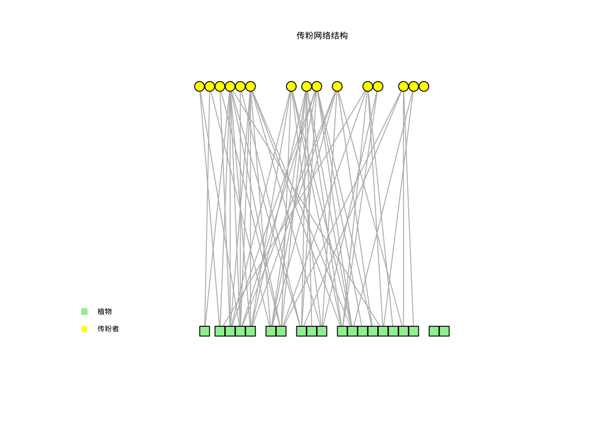
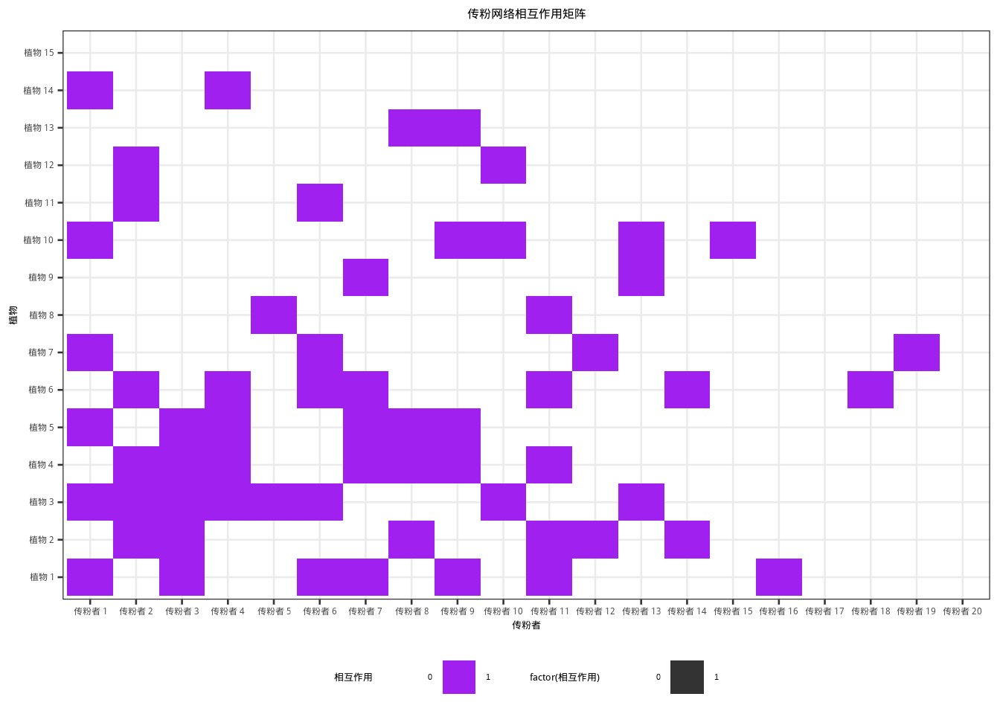
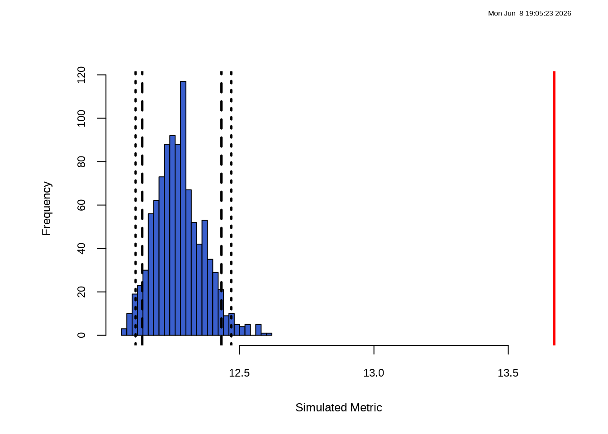
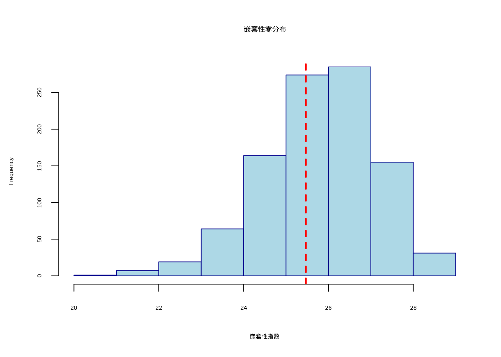

6 从统计模拟到生成式AI：生态推断的新范式
6.1 本章学习目标
知识目标：学完本章后，你能回答：置换检验、蒙特卡洛检验和自助法三者在数据生成机制上的本质区别是什么？在什么情况下应该用基于模拟的方法替代经典参数检验？零模型检验如何帮助我们区分真实的生态过程与随机波动？
技能目标：你能独立用R实现置换检验来比较组间差异，用自助法（bootstrap）估计生态参数（如多样性指数）的置信区间，并为群落组装和生态网络等复杂问题选择合适的零模型随机化策略。
AI素养目标：你能理解Bootstrap \(\to\) Bagging \(\to\) Random Forest这一完整的思想演化链条，Random Forest并非从天而降的”黑箱魔法”，而是重采样思想在模型层面上的自然延伸，其方差分解公式揭示了聚合降低预测方差的数学机制。你能认识到扩散模型作为当前最强大的图像生成技术，其”去噪采样”过程与蒙特卡洛模拟之间存在深刻的方法论关联，两者都是在学习如何从简单分布中采样以生成复杂结构。你将批判性地思考深度生成模型（GAN、VAE）作为”生态零模型生成器”的前景与根本局限。
6.2 引言
在前一章中，常林用配对t检验分析了天童山台风前后的树木死亡率。然而，当她在组会上报告结果时，一位师兄提出了质疑：“台风是罕见事件，你的样本量只有20个配对样方，而且死亡率数据明显右偏，配对t检验的正态性和独立性假设，真的满足吗？”常林愣住了。她检查了Q-Q图，确实，残差偏离了正态分布。她检查了空间分布，相邻样方的死亡率高度相似，独立性假设也不成立。
首先，这个困境揭示了经典假设检验的根本局限。t检验、ANOVA等方法依赖理论分布（t分布、F分布），而这些理论分布的有效性建立在数据满足特定假设的前提之上。当假设不成立时，p值便失去了其校准好的错误率保证。生态学数据，偏态、零膨胀、空间自相关、时间依赖性，常常违反这些假设。我们需要的是一套不依赖理论分布假设的推断框架。
进而，计算机模拟提供了一个优雅的替代方案。置换检验通过随机打乱样本标签来构造零分布，bootstrap通过重复采样来估计统计量的抽样分布，蒙特卡洛检验通过随机生成符合条件的”零数据”来检验观测模式的显著性。这些方法的共同哲学是：让数据本身生成它的参照系，而非套用预设的理论分布。这就像在数字世界中建立了无数个”平行的天童山”，通过观察在这些平行世界中某个统计量的典型波动范围，来判断常林观测到的效应是否超出了随机变异的合理范围。
最终，基于模拟的方法为现代AI方法提供了直接的思想源头。Bootstrap的重采样思想直接催生了Bagging和Random Forest，随机森林并非从天而降的”黑箱魔法”，而是统计重采样思想在模型层面的自然延伸。我们在梅花鹿保护案例中也将看到，同样的模拟推断逻辑可以应用于物种分布模式、群落构建机制等更复杂的生态学问题。常林从经典检验走向模拟方法的旅程，也正是统计思维从理论驱动走向数据驱动的缩影。
以梅花鹿保护为例：为检验梅花鹿空间分布是否显著偏离随机，我们可以用计算机模拟数千次完全空间随机过程，构建Ripley’s K函数在零假设下的经验分布，然后将观测值与这个分布比较。基于模拟的假设检验方法主要包括三大类：置换检验（随机重排观测数据的标签构造零分布）、参数化蒙特卡洛检验（从理论模型生成模拟数据）和自助法（从观测数据有放回重抽样估计抽样分布）。这三者在梅花鹿保护的种群遗传学、栖息地评估和保护效果分析中均有广泛应用。
这些方法在梅花鹿保护研究中日益重要的原因在于它们能够有效处理生态数据的复杂性特征。梅花鹿保护数据通常具有空间自相关性、时间序列依赖性、异方差性等特点，这些特性往往使得传统参数检验的前提条件难以满足。相比之下，基于模拟的方法更加灵活，不依赖于严格的前提假设，让数据本身揭示其内在规律。
当然，我们也需要认识到基于模拟方法的局限性。它们对计算资源的要求较高，需要进行大量的重复模拟；结果的解释需要格外谨慎，因为模拟次数和具体方法都会影响最终结论。更重要的是，这些统计工具不能替代对梅花鹿生态学机制的深入理解，它们的主要作用是帮助我们评估观测模式是否显著偏离随机期望。
让我们共同开启这段探索统计推断新天地的旅程，在这里，梅花鹿保护数据不再是需要强行套入理论分布的被动对象，而是能够主动”诉说”种群动态规律的生动主体。
本章将按照”从简单到复杂、从具体方法到思想演化”的顺序展开：首先介绍最直观的置换检验，接着讨论参数化蒙特卡洛检验及其在AI中的思想演化，在此基础上引入非参数化的自助法及其到Bagging和Random Forest的延伸，最后探讨生态学零模型及其与深度生成模型的对话。这一结构不仅帮助读者掌握每种方法的技术细节，更重要的是理解贯穿其中的核心思想——让数据本身生成它的参照系。
6.3 生态假设的置换检验
回到常林面临的具体困境：台风后的树木死亡率数据明显右偏，相邻样方的死亡率因为空间自相关而彼此相似，配对t检验的正态性和独立性假设双双被违反。她需要一个不依赖理论分布假设的方法，仅凭数据本身的随机化来构建推断的参照系。
置换检验正是为这种场景设计的。它的基本逻辑朴素而深刻：如果台风前后真的”没有差异”，那么”台风前”和”台风后”的标签就是可以任意交换的，随机打乱标签后计算的统计量，刻画了”纯粹由随机因素造成的差异”的分布范围。将观测到的真实差异与这个分布比较，就能判断观测效应是否超出了随机波动的合理范围。
6.3.1 置换检验的基本原理
置换检验的基本原理极其优雅：如果零假设为真，那么观测数据的标签（如处理组和对照组）就是可以任意交换的。换句话说，如果保护措施确实没有效应，那么将梅花鹿种群参数随机分配到不同组别中，应该不会改变我们感兴趣的统计量（如组间均值差异）的分布特征。
6.3.2 置换检验的技术实现过程
置换检验的实施包含三个关键步骤：
1. 计算观测统计量 首先，基于原始数据计算我们关心的检验统计量——保护区内外的种群密度差异、不同季节活动模式的相似性指数、或环境梯度上的分布模式统计量。
2. 构建零分布 通过随机重排观测数据的标签（如保护区标签），每次重排后重新计算检验统计量。重复这一过程数千次，构建统计量在零假设下的经验分布，即零分布。这一过程相当于在计算机上模拟”如果零假设为真，统计量可能呈现的随机变异”。
3. 计算p值 将观测统计量与零分布进行比较，计算p值。p值定义为：在零假设下，获得与观测统计量同样极端或更极端结果的概率。对于双侧检验（如”保护区内外有无差异”），p值等于零分布中统计量绝对值大于或等于观测统计量绝对值的比例；对于单侧检验（如”保护区内是否高于保护区外”），则只需计算一个方向的尾部比例。具体采用双侧还是单侧取决于科学问题——你关心的是”有无差异”（双侧）还是”一个方向强于另一个方向”（单侧）。例如，本章后续的C-score检验和嵌套性检验均基于”观测值是否显著高于随机期望”的科学假设，因而采用单侧检验。
6.3.3 R语言实现示例
以下通过几个典型的梅花鹿保护研究场景展示置换检验在R中的实现：
示例1：保护区内外的梅花鹿种群密度差异检验
置换检验的逻辑适用于多种比较设计——配对比较（如台风前后）与独立组比较（如保护区内/外）虽然标签交换的具体方式不同，但核心思想完全一致：在零假设下随机重排标签，构建统计量的零分布。下面以独立两样本比较为例，展示置换检验的具体实现过程。这个例子模拟了保护区内和保护区外各20个监测样点的梅花鹿种群密度数据，通过置换检验来评估两组间的差异是否具有统计显著性。
首先进行数据准备和观测统计量计算：
load(file="data/protected_unprotected.Rdata")
# 计算观测统计量：两组平均梅花鹿种群密度的差异
obs_diff <- mean(protected) - mean(unprotected)接下来进行置换检验的核心过程，通过随机重排构建零分布：
# 置换检验：通过随机重排构建零分布
n_perm <- 1000 # 置换次数，建议至少1000次以保证结果稳定
perm_diffs <- numeric(n_perm)
combined <- c(protected, unprotected)
for (i in 1:n_perm) {
# 随机重排合并后的数据，模拟零假设下（无组间差异）的随机分配
perm_sample <- sample(combined)
perm_diffs[i] <- mean(perm_sample[1:20]) - mean(perm_sample[21:40])
}
# 计算p值：零分布中统计量绝对值大于等于观测值的比例
p_value <- mean(abs(perm_diffs) >= abs(obs_diff))## 梅花鹿保护研究 - 置换检验结果：## 观测梅花鹿种群密度差异: 5.25## p值: 0示例2：梅花鹿栖息地植物群落组成差异检验（置换ANOVA）
群落组成差异检验在梅花鹿保护研究中具有重要意义，特别是在评估不同栖息地类型对植物群落组成的影响时。下面使用vegan包中的adonis2函数进行置换多元方差分析（PERMANOVA），检验核心栖息地和边缘栖息地在植物群落组成上的差异。
load(file="data/comm_data_groups.Rdata")
# 置换ANOVA检验群落组成差异
# adonis2函数执行基于距离的置换多元方差分析（PERMANOVA）
# 该方法通过置换检验评估组间在群落组成上的差异显著性
adonis_result <- adonis2(comm_data ~ groups, method = "bray")
# 输出分析结果
knitr::kable(adonis_result, caption = "置换ANOVA分析结果", booktabs = TRUE) %>%
kableExtra::kable_styling(latex_options = c("hold_position"))| Df | SumOfSqs | R2 | F | Pr(>F) | |
|---|---|---|---|---|---|
| Model | 1 | 0.0098147 | 0.0145518 | 0.2658007 | 0.791 |
| Residual | 18 | 0.6646505 | 0.9854482 | NA | NA |
| Total | 19 | 0.6744652 | 1.0000000 | NA | NA |
表 6.1 展示了置换ANOVA分析的结果，从中可以看出不同栖息地类型对植物群落组成的影响是否具有统计显著性。
示例3：空间自相关检验
空间自相关分析是空间生态学中的重要内容，用于检验空间数据中是否存在非随机的空间模式。Moran’s I指数是常用的空间自相关度量指标，下面通过置换检验来评估其统计显著性。
首先加载空间分析包并准备空间数据：
接下来构建空间权重矩阵并进行Moran’s I置换检验：
# 构建空间权重矩阵：使用k近邻方法，每个点选择最近的5个邻居
nb <- knn2nb(knearneigh(coords, k = 5))
w <- nb2listw(nb)
# Moran's I置换检验：999次置换构建零分布，检验空间自相关的显著性
moran_test <- moran.mc(sp_data, w, nsim = 999)
print(moran_test)##
## Monte-Carlo simulation of Moran I
##
## data: sp_data
## weights: w
## number of simulations + 1: 1000
##
## statistic = -0.2891, observed rank = 1, p-value = 0.999
## alternative hypothesis: greater示例4：使用coin包进行置换检验
coin包提供了基于条件推断的置换检验框架，支持多种非参数统计检验。下面使用coin包重新分析示例1中的保护区内外梅花鹿种群密度数据，展示其简洁的语法和强大的功能。
首先加载coin包并准备数据：
# 准备数据：将保护区内外梅花鹿种群密度数据合并为带分组变量的数据框
data <- data.frame(
value = c(protected, unprotected),
group = factor(rep(c("保护区内", "保护区外"), each = 20))
)接下来使用coin包进行置换独立性检验：
# coin包基于条件推断框架的置换检验，重抽样1000次构建零分布
# independence_test适用于数值型响应变量与因子型分组变量之间的独立性检验
test_result <- independence_test(value ~ group,
data = data,
distribution = approximate(
nresample = 1000))
print(test_result)##
## Approximative General Independence Test
##
## data: value by group (保护区内, 保护区外)
## Z = 3.8802, p-value < 0.001
## alternative hypothesis: two.sided这些示例展示了置换检验在不同生态学场景中的应用，从简单的均值差异检验到复杂的空间分析和群落分析。研究人员可以根据具体研究问题选择合适的置换检验方法。
6.3.4 置换检验在生态学中的应用价值与局限
置换检验在生态学研究中展现出独特的应用价值，这主要源于其对生态数据特性的良好适应性。生态数据往往具有复杂的分布特征，如偏态分布、异方差性等，这些特征使得传统的参数检验方法难以适用。置换检验完全基于数据本身，不依赖于任何理论分布假设，这使其能够有效处理生态学中常见的非正态数据。更重要的是，许多生态学研究中关心的统计量，如多样性指数、空间自相关指数、网络拓扑指标等，根本没有现成的理论分布可供参照。置换检验通过构建经验分布的方式，为这些复杂统计量的统计推断提供了可行的解决方案。
在具体应用层面，置换检验能够保持数据的原始结构特征，包括样本量、数据范围等关键信息，这在实际应用中具有重要价值。与传统的参数检验相比，置换检验在小样本情况下表现出更好的适用性。当样本量较小时，参数检验的功效往往不足，而置换检验通过大量的随机化模拟，能够提供相对可靠的统计推断。这种特性使得置换检验特别适合处理生态学研究中常见的有限样本问题。
置换检验在生态学的各个分支领域都有广泛的应用。在群落生态学中，研究人员通过置换ANOVA或置换MANOVA来检验不同处理（如施肥、放牧）对植物群落组成的影响，评估处理间在物种组成上的差异显著性。在空间生态学中，置换检验被用于检验物种的空间分布是否偏离随机模式，通过随机重排物种在空间中的位置来构建Ripley’s K函数或Moran’s I指数的零分布。行为生态学家利用置换检验来分析动物的行为序列是否具有特定模式，通过随机重排行为事件的时间顺序来检验观测行为序列的非随机性。在保护生物学领域，置换检验被用于比较保护区内外的生物多样性，评估保护措施对物种丰富度和群落结构的影响。
然而，置换检验也存在一些固有的局限性。首先，置换检验对计算资源的要求较高，通常需要进行1000-10000次的随机化重复，这在大规模数据分析中可能成为瓶颈。其次，不同的随机化方案可能导致不同的结果，研究人员需要根据具体研究问题谨慎选择适当的随机化策略。最重要的是，统计显著性并不等同于生态重要性，置换检验的结果仍需结合生态学机制进行深入解释，避免过度依赖p值而忽视生态学意义。
在与其他统计方法的比较中，置换检验与参数检验形成互补关系而非替代关系。当参数检验的前提条件满足时，参数检验通常具有更高的统计效率；当前提条件不满足时，置换检验提供了可靠的替代方案。与本章稍后将详述的自助法（bootstrap）相比，两者虽然都基于重抽样思想，但应用目的不同：自助法通过有放回抽样来估计统计量的抽样分布，主要用于构建置信区间；而置换检验通过无放回的标签重排来构建零分布，主要用于假设检验。与蒙特卡洛检验的关系则体现在数据生成机制的差异上：蒙特卡洛检验基于理论模型生成模拟数据，而置换检验基于观测数据的重排，两者都是基于模拟的统计方法，但理论基础和应用场景有所不同。
在实际应用中，研究人员需要注意几个关键的技术细节。随机化次数的选择直接影响结果的精确性，建议至少进行1000次随机化，对于精确的p值估计，可能需要10000次或更多。为确保结果的可重复性，应在每次分析前设置随机数种子。当进行多个检验时，需要考虑多重比较问题，可采用Bonferroni校正或错误发现率控制等方法进行校正。最重要的是，统计显著性必须结合生态学意义进行解释，避免过度依赖p值而忽视生态学机制的理解。
置换检验代表了生态统计学从理论驱动向数据驱动的重要转变，为处理复杂的生态学问题提供了灵活而强大的统计工具。通过理解其原理、掌握其应用、认识其局限，我们能够在面对各种非标准统计问题时做出更加可靠的统计推断，推动生态学研究的深入发展。
在掌握了置换检验的基本原理和应用方法后，我们现在转向另一种重要的基于模拟的统计方法，蒙特卡洛检验。虽然两者都基于随机模拟的思想，但它们在数据生成机制和应用场景上存在重要差异，理解这些差异将帮助我们更好地选择合适的方法。
6.4 生态假设的蒙特卡洛检验
6.4.1 蒙特卡洛方法的概念体系
蒙特卡洛方法是一个广义的概念，指所有基于随机模拟的统计推断方法。在生态统计学中，蒙特卡洛方法按照数据生成机制可以分为两大类：
参数化蒙特卡洛检验基于理论模型或假设分布生成全新的模拟数据，主要用于检验观测数据与理论模型的拟合优度。非参数化蒙特卡洛方法基于观测数据的重抽样，其中最重要的就是自助法（bootstrap），它通过有放回的重抽样来估计统计量的抽样分布，主要用于构建置信区间和参数估计。
6.4.2 蒙特卡洛检验的基本原理
蒙特卡洛检验特指参数化蒙特卡洛检验，是一种基于随机模拟的统计推断方法，其名称来源于著名的蒙特卡洛赌场，反映了该方法依赖于随机抽样的本质。与置换检验不同，蒙特卡洛检验不是基于观测数据的重排，而是基于理论模型或假设分布生成模拟数据，通过大量的随机模拟来构建统计量的经验分布。
蒙特卡洛检验的核心思想是通过计算机模拟来近似统计量的抽样分布，特别适用于那些理论分布未知或过于复杂的统计量。在生态学研究中，许多复杂的统计量，如空间生态学中的Ripley’s K函数、群落生态学中的\(\beta\)多样性指数、系统发育分析中的进化速率等，都没有现成的理论分布可供参照。蒙特卡洛检验为这些复杂统计量的统计推断提供了可行的解决方案。
蒙特卡洛检验的实施过程通常包括三个关键步骤。首先，基于零假设构建理论模型或假设分布，这个模型描述了在零假设成立时数据应该遵循的分布特征。其次，从这个理论模型中重复生成大量的模拟数据集，每次模拟都计算我们关心的统计量。最后，基于这些模拟统计量构建经验分布，将观测统计量与这个经验分布进行比较，计算p值或构建置信区间。
让我们通过一个具体的生态学例子来详细说明这三个步骤。假设我们正在研究梅花鹿在保护区内的空间分布模式，我们想要检验观测到的梅花鹿个体间距是否显著偏离随机分布的期望。零假设是梅花鹿在保护区内遵循完全空间随机分布模式。
步骤1：构建理论模型 基于零假设，我们构建一个完全空间随机的理论模型。在这个模型中，梅花鹿个体在保护区内完全随机分布：每个个体的空间位置相互独立且在保护区内均匀分布，个体之间不存在吸引或排斥。这个理论模型描述了在零假设成立时梅花鹿空间分布应该遵循的分布特征。
步骤2：生成模拟数据集并计算统计量 从构建的理论模型中，我们重复生成大量的模拟数据集。每次模拟都随机生成与观测数据相同数量的梅花鹿个体位置。对于每个模拟数据集，我们计算关心的统计量——这里以点间平均距离（所有点对间欧氏距离的均值）作为度量空间聚集程度的指标：距离越小，说明点越趋于聚集；距离越大，分布越趋于均匀。重复这个过程1000次，我们就得到了1000个在零假设下的平均距离值。
步骤3：构建经验分布并比较 基于这1000个模拟统计量，我们构建了平均点间距离在零假设下的经验分布。然后，将实际观测到的平均点间距离与这个经验分布比较。如果观测值落在这个经验分布的极端位置（比如最低的5%，因为聚集意味着距离更小），我们就可以拒绝零假设，认为梅花鹿的空间分布模式显著偏离了随机分布的期望。
这个例子清晰地展示了蒙特卡洛检验的逻辑流程：从理论模型构建，到模拟数据生成，再到统计比较。整个过程不依赖于任何现成的理论分布，而是完全基于计算机模拟来构建统计推断的基础。
与置换检验相比，蒙特卡洛检验在数据生成机制上存在根本差异。置换检验基于观测数据的重排，通过随机交换数据标签来构建零分布，其前提假设是如果零假设为真，那么数据的标签就是可以任意交换的。而蒙特卡洛检验则基于理论模型生成全新的模拟数据，其前提假设是我们能够准确描述零假设下的数据生成过程。这种差异使得两种方法适用于不同的研究场景：置换检验更适合于比较组间差异的检验，而蒙特卡洛检验更适合于检验观测数据与理论模型的拟合优度。
在生态学应用中，蒙特卡洛检验具有独特的优势。它能够处理那些置换检验难以适用的场景，比如检验观测数据是否来自某个特定的理论分布，或者评估复杂生态模型的拟合优度。例如，在检验物种的空间分布是否遵循完全空间随机过程时，蒙特卡洛检验可以通过模拟完全空间随机过程来构建期望分布；在检验系统发育信号时，可以通过模拟布朗运动演化过程来构建零分布。
6.4.3 蒙特卡洛检验的主要类型
在生态学研究中，基于理论模型生成模拟数据的蒙特卡洛检验（狭义）主要应用于以下场景：完全空间随机性检验——检验物种的空间分布是否遵循完全空间随机过程（CSR），通过模拟CSR生成期望分布并与观测空间模式比较；系统发育信号检验——检验性状是否具有系统发育保守性，通过模拟布朗运动演化过程构建零分布；模型拟合优度检验——评估观测数据与理论模型的拟合程度，从理论模型生成模拟数据来构建拟合优度统计量的经验分布。需要注意的是，群落零模型检验虽然也大量使用随机模拟，但它同时涵盖置换和蒙特卡洛两类策略，本章将在第四节中作为综合应用框架单独讨论。
6.4.4 R语言实现示例：空间分布随机性检验
下面通过空间分布随机性检验的R代码来具体说明蒙特卡洛检验的三个步骤：
# 蒙特卡洛检验：检验物种空间分布是否偏离完全空间随机过程（CSR）
set.seed(123)
observed_pattern <- matrix(runif(100), ncol = 2)
n_sim <- 1000
sim_stats <- numeric(n_sim)
for (i in 1:n_sim) {
# 在完全空间随机假设下生成模拟数据，计算点间平均距离作为聚集指标
sim_pattern <- matrix(runif(100), ncol = 2)
sim_stats[i] <- mean(dist(sim_pattern))
}
obs_stat <- mean(dist(observed_pattern))
# p值：模拟统计量小于等于观测统计量的比例（单侧检验）
# 由于平均距离越小表示空间聚集越强，我们关注的是"观测比随机更聚集"的方向
# 如果p值很小（如<0.05），说明观测到的空间聚集模式在CSR下极少出现
p_value <- mean(sim_stats <= obs_stat)## 蒙特卡洛检验结果：## 观测统计量: 0.5167571## p值: 0.43代码与蒙特卡洛检验步骤的对应关系：
步骤1：构建理论模型 - 理论模型：完全空间随机过程（Complete Spatial Randomness, CSR） - 代码体现：matrix(runif(100), ncol = 2) 在单位正方形内随机生成100个点 - 生态学意义：假设物种在空间中的分布是完全随机的，没有任何聚集或分散模式
步骤2：生成模拟数据集并计算统计量 - 模拟数据生成：for (i in 1:n_sim) 循环生成1000个模拟数据集 - 统计量计算：mean(dist(sim_pattern)) 计算每个模拟数据集的空间点间平均距离 - 生态学意义：平均距离统计量反映了空间点的聚集程度，较小的平均距离表示空间聚集
步骤3：构建经验分布并比较 - 经验分布构建：sim_stats 向量包含了1000个模拟统计量 - 观测统计量：mean(dist(observed_pattern)) 计算观测数据的平均距离 - 统计比较：mean(sim_stats <= obs_stat) 计算p值，即模拟统计量小于等于观测统计量的比例 - 生态学解释：如果p值很小（如<0.05），说明观测到的空间聚集模式在随机过程中很少出现，物种分布显著偏离随机模式
这个具体的代码示例清晰地展示了蒙特卡洛检验从理论模型构建到统计推断的完整流程，为我们检验空间分布模式提供了实用的工具。
以上空间随机性检验的示例集中体现了蒙特卡洛检验的核心逻辑——从理论模型生成数据、构建经验分布、进行统计比较。这一逻辑同样适用于上一节提到的系统发育信号检验、模型拟合优度检验等场景，只是理论模型和统计量的具体形式不同。蒙特卡洛检验为处理那些理论分布未知的复杂统计问题提供了强大的工具，是生态统计学家工具箱中不可或缺的一部分。
参数化蒙特卡洛检验的核心是从理论模型生成数据，而蒙特卡洛方法家族中还有一个重要分支——非参数化蒙特卡洛方法，它直接从观测数据出发进行重抽样，其中最具代表性的就是自助法（bootstrap）。在正式进入自助法之前，让我们先从一个更宏阔的视角审视随机采样思想的进化轨迹——这条轨迹不仅连接了经典统计方法与现代AI，也为理解自助法的深远影响提供了必要的背景。
6.4.5 从蒙特卡洛到生成式AI：采样方法的进化
在我们深入探讨自助法之前，值得暂停片刻，从一个更宏阔的视角审视随机采样这一核心思想的进化轨迹。蒙特卡洛方法诞生于1940年代的核物理计算，其核心思想朴素而深邃：当解析计算不可能时，用随机采样来逼近。这个思想的力量在于，它将一个”无法回答”的问题，比如计算一个高维积分，转化为一个”可以反复尝试”的问题，比如在空间中随机撒点，统计落在感兴趣区域内的比例。积分、期望、概率，所有这些在数学上等价于某种”面积”或”体积”的量，都可以通过采样的方式来近似。
蒙特卡洛的优雅在于其通用性。无论被积函数多么复杂，只要我们能从中采样，大数定律就保证了样本均值收敛于期望值。在生态学中，当我们无法解析地推导Ripley’s K函数的理论分布，或者无法写出复杂空间过程中的似然函数时，蒙特卡洛模拟为我们打开了一扇窗。
然而，采样的力量有其边界。当分布的维度增加时，采样效率急剧下降，这就是所谓的”维数灾难”。马尔可夫链蒙特卡洛（MCMC）通过在参数空间中构造一条以目标分布为平稳分布的马尔可夫链来应对高维挑战，但它在高维后验分布中的混合速度可能极慢，链在参数空间中的某些区域”黏滞”不前，需要极长的迭代才能覆盖整个分布。在生态学的层次模型中，比如一个包含物种、种群、个体三层随机效应的贝叶斯模型，MCMC的收敛可能成为实际应用的瓶颈。
变分推断（Variational Inference）代表了一种方法论上的转向：用优化替代采样。与其花费巨量计算资源在高维空间中随机游走，不如在一个简单分布族中寻找”最接近”真实后验的近似分布，这里”最接近”的度量是KL散度：
\[q^*(z) = \arg\min_{q \in \mathcal{Q}} \text{KL}(q(z) \| p(z|x))\]
变分推断将推断问题转化为优化问题，通常比MCMC快几个数量级。但它付出了近似性的代价：变分分布族的选择限制了后验近似的能力，如果真实后验是多峰的或具有复杂相关性，简单的分布族（如均值场近似）可能提供令人误导的近似。
这一采样到优化的方法论转向，在深度学习时代获得了更加戏剧化的进展。扩散模型（Diffusion Models），当前最强大的图像生成技术背后的数学引擎，可以被理解为一个学习”逆采样路径”的过程。其数学构造分为两个阶段：正向过程，向数据逐步添加高斯噪声，直至数据完全变为纯噪声；逆向过程，学习一个神经网络来逐步”去噪”，从纯噪声中恢复出结构化的数据。
正向过程可以形式化为：
\[q(x_t | x_{t-1}) = \mathcal{N}(x_t; \sqrt{1-\beta_t} x_{t-1}, \beta_t I)\]
其中\(\beta_t\)控制每一步的噪声强度。当\(t \to T\)时，\(x_T\)近似于标准正态分布\(\mathcal{N}(0, I)\)。
逆向过程则是学习一个神经网络\(\epsilon_\theta(x_t, t)\)来预测每一步添加的噪声：
\[p_\theta(x_{t-1} | x_t) = \mathcal{N}(x_{t-1}; \frac{1}{\sqrt{\alpha_t}}(x_t - \frac{\beta_t}{\sqrt{1-\bar{\alpha}_t}}\epsilon_\theta(x_t, t)), \sigma_t^2 I)\]
从本质上说，逆向过程是从一个简单分布（标准正态）中采样，然后通过学习的”去噪网络”逐步变换为复杂的数据分布。这等价于学习一个从简单分布到复杂分布的”采样路径”，一条将无结构的随机性转化为有结构的复杂性的数学通道。
将这一思想映射回生态学，我们获得了一个引人深思的类比。扩散模型的去噪过程，恰如从随机的”生态噪声”中逐渐”生成”一个结构化的生态群落：从随机个体分布开始，通过引入种间互作、环境过滤、中性漂变等”去噪”规则，最终形成具有特定物种组成、多度分布和空间结构的群落。当然，这只是一个启发性的类比，生态群落的形成机制远比扩散模型的学习过程复杂，但它提示我们，统计模拟方法的进化正在为我们理解生态系统的涌现性提供新的概念工具。
从蒙特卡洛的随机撒点，到MCMC的马尔可夫游走，到变分推断的优化近似，再到扩散模型的逆过程采样，这是一条从”采样已知分布”到”学习如何采样”的进化路径。每一个阶段都在拓展我们处理不确定性的能力边界，也为生态学的统计推断提供了日益丰富的工具箱。理解这条进化链，你就能看清楚统计模拟方法的过去与未来。
生态学中的具体映照。将这条进化链映射到常林的天童山研究中，我们可以清晰地看到每个阶段的适用场景。当她要检验台风后树木死亡率的显著性时，简单的置换检验就能胜任——随机置换”台风前/后”标签，计算置换分布下的死亡率差异，检验观测差异的显著性。当她需要估计一个包含空间自相关、物种异质性和时间动态的复杂贝叶斯层次模型时，MCMC提供了在高维后验空间中采样的方法，尽管面临收敛诊断的挑战。当她需要快速近似一个复杂后验时，比如在实时决策场景中，变分推断可以提供比MCMC快一个数量级的近似解。而扩散模型的应用，虽然目前还处于探索阶段，但它为”从无到有地生成符合生态规律的群落数据”提供了一个数学框架，这对于理解群落的涌现性和评估保护方案的后果具有潜在价值。
一个启发性的生态学类比。我们可以将扩散模型的去噪过程理解为一种”逆向生态演替”。在正向过程中，我们向一个初始的、结构化良好的生态群落逐步添加随机扰动，死亡事件、迁入迁出、环境随机波动，最终得到一个完全随机的”生态噪声”状态。在逆向过程中，一个训练好的神经网络学习从这种随机状态出发，通过逐步”去噪”来重建一个具有特定物种组成、空间结构和多度分布的群落。当然，这个类比在数学上并不严格，真实的演替远比扩散过程复杂，涉及非线性反馈、阈值效应和历史偶然性，但它捕捉了一个根本性的概念联系：生成过程可以被理解为一种从简单到复杂、从随机到结构的有序变换。这种视角对于我们理解复杂系统的涌现性具有独特的启发价值。
面对现实的局限。我们必须坦诚地指出，扩散模型在生态学中的直接应用面临两个核心挑战。第一，数据规模：训练一个有效的扩散模型通常需要数万到数百万个样本，而一个典型的生态学研究可能只有几十到几百个样方。第二，数据类型：扩散模型的标准框架建立在连续数据（如图像像素值）之上，而生态学中的核心数据往往是离散的，物种计数的零膨胀分布、存在/缺失的二元数据、组成数据的单纯形约束。将扩散模型适配到这些数据类型上是活跃的研究领域，但远未成熟。这恰恰凸显了我们在AI时代的独特价值：理解自己数据的特性，识别哪些AI方法适合、哪些不适合，而不是盲目追随技术潮流。
尝试与AI协作
- 请AI用通俗的语言和简单的数值例子，解释MCMC在高维空间中”混合慢”的直觉原因，为什么维度高了以后，随机游走很难有效探索整个分布？
- 想象一个生态学场景：你想用扩散模型生成”模拟的群落组成数据”，请AI分析这需要什么样的训练数据、模型架构和验证策略？
批判性评估：AI描述的技术路径是否回避了生态数据的根本特征，例如，扩散模型假设数据位于连续空间，而群落组成数据通常是离散的（物种存在/缺失、计数）？AI是否提供了一个实际可运行的方案，还是仅仅停留在”概念上可行”的层面？
6.5 生态假设的自助法检验
在走完从蒙特卡洛到扩散模型的思想之旅后，让我们回到本章的核心任务：掌握非参数化蒙特卡洛方法中最重要也最实用的工具——自助法。它既是参数估计的利器，也是Bagging和Random Forest等现代AI算法的统计学根基。
6.5.1 自助法的基本原理
自助法（bootstrap）是蒙特卡洛方法的一种特殊形式，属于非参数化蒙特卡洛方法。其核心思想是通过对观测数据进行有放回的重抽样来估计统计量的抽样分布。自助法由Bradley Efron在1979年提出，现已成为现代统计学中最重要的工具之一。
自助法的基本假设是：观测样本能够代表总体的分布特征。通过对观测样本进行有放回的重抽样，我们可以生成大量的”自助样本”，这些自助样本在统计上等价于从原始总体中抽取的新样本。
6.5.2 自助法的实施步骤
自助法的实施过程包括三个关键步骤：
步骤1：生成自助样本 从原始观测数据中进行有放回的重抽样，生成与原始样本大小相同的自助样本。这个过程重复B次（通常B=1000-10000），得到B个自助样本。
步骤2：计算统计量 对每个自助样本计算我们关心的统计量，比如均值、中位数、回归系数、多样性指数等。这样就得到了统计量的自助分布。
步骤3：构建置信区间或进行假设检验 基于自助分布，我们可以构建统计量的置信区间，或者进行假设检验。常用的置信区间构建方法包括百分位数法、偏差校正法等。
6.5.3 自助法在生态学中的应用
自助法在生态学研究中有着广泛的应用，特别是在梅花鹿保护研究中：
参数估计的不确定性评估：估计生态学参数（如梅花鹿种群增长率、物种丰富度、多样性指数）的置信区间。
模型参数的不确定性分析：评估生态模型参数估计的不确定性，如梅花鹿栖息地适宜性模型的系数、种群动态模型的参数等。
假设检验：通过构建统计量的自助分布，进行非参数的假设检验，如检验梅花鹿种群参数的差异显著性。
小样本问题处理：在小样本情况下，自助法能够提供比传统参数方法更可靠的统计推断，特别适合梅花鹿保护研究中的有限样本分析。
6.5.4 R语言实现示例
示例1：多样性指数置信区间估计
set.seed(123)
# 模拟群落数据：30个物种的计数
species_counts <- rpois(30, lambda = 5)
# 定义香农多样性指数计算函数
# boot::boot()要求统计量函数接受两个参数：原始数据data和重抽样索引indices
# 注意：p=0时p*log(p)在数学上定义为0，但R中返回NaN，需显式处理
shannon_func <- function(data, indices) {
d <- data[indices] # 根据自助法索引向量提取重抽样数据
p <- d / sum(d) # 计算各物种的相对多度
p <- p[p > 0] # 移除零比例，避免0*log(0)=NaN
-sum(p * log(p)) # 香农多样性指数
}
# 自助法估计：1000次重抽样
boot_result <- boot(species_counts, shannon_func, R = 1000)
print(boot_result)##
## ORDINARY NONPARAMETRIC BOOTSTRAP
##
##
## Call:
## boot(data = species_counts, statistic = shannon_func, R = 1000)
##
##
## Bootstrap Statistics :
## original bias std. error
## t1* 3.318858 0.002494391 0.01870289## BOOTSTRAP CONFIDENCE INTERVAL CALCULATIONS
## Based on 1000 bootstrap replicates
##
## CALL :
## boot.ci(boot.out = boot_result, type = "perc")
##
## Intervals :
## Level Percentile
## 95% ( 3.281, 3.356 )
## Calculations and Intervals on Original Scale6.5.5 自助法的优势与局限
自助法的主要优势在于它不依赖任何理论分布假设，适用于那些根本没有现成公式可用的复杂统计量（如多样性指数、网络拓扑指标），在小样本情况下表现良好。但它也存在几个不可忽视的局限：第一，对异常值敏感——一个极端观测值被反复抽中后会放大偏差，在极端偏态分布中可能表现不佳；第二，计算强度较大，B次重抽样意味着B次完整的计算过程；第三，自助法的有效性依赖于原始样本能够充分代表总体分布特征，因此需要足够大的原始样本量。尽管存在这些局限，自助法作为蒙特卡洛方法的重要组成部分，为我们提供了强大的统计推断工具，特别适用于处理那些传统参数方法难以解决的复杂生态学问题。
6.5.6 从Bootstrap到Bagging再到Random Forest：统计重采样的AI演化
在掌握了自助法的基本原理之后，我们有必要追溯一条在统计学史上具有里程碑意义的思想演化链条。这条链的起点是重采样，终点是现代机器学习中最强大的算法之一，而其中的每一步，都深刻植根于统计学的核心概念。
演化链条
这个链条清晰地展示了一条统计思想向机器学习算法自然流变的谱系：Bootstrap（Efron, 1979）\(\to\) Bagging / Bootstrap Aggregating（Breiman, 1996）\(\to\) Random Forest（Breiman, 2001）。这不是两个世界的断裂，而是一条连续的谱系。
Bootstrap的核心思想我们已经熟悉：通过对观测样本的有放回重抽样，模拟统计量的抽样分布，从而在不依赖理论分布的情况下估计标准误和置信区间。这一思想处理的是”单个统计量”的不确定性。Breiman在1996年提出了一个大胆的扩展：如果将Bootstrap用于”整个模型”呢？对于同一数据集，生成多个Bootstrap样本，每个样本训练一个模型，然后将这些模型的预测进行聚合，平均（回归）或投票（分类）。这就是Bagging。
Bagging降低预测方差的能力，可以通过一个简洁的统计分解来理解。假设我们有\(B\)个模型，它们的预测两两之间的相关系数为\(\rho\)，每个模型的预测方差为\(\sigma^2\)。那么，\(B\)个模型预测均值的方差为：
\[\text{Var}(\bar{f}) = \rho\sigma^2 + \frac{1-\rho}{B}\sigma^2\]
这个公式揭示了一个关键的洞察。第一项\(\rho\sigma^2\)是即使\(B \to \infty\)也无法消除的方差下限，它来自模型之间的相关性。第二项\(\frac{1-\rho}{B}\sigma^2\)是可以通过增加\(B\)来减少的部分。当\(\rho < 1\)时，即模型之间不完全相关，增加\(B\)确实能降低聚合后的方差。而Bootstrap样本之间的相关性通常小于1，因为不同的重抽样产生了略有差异的训练集。
但\(\rho\)不可能为零。Bootstrap样本虽然各不相同，但都来自同一个原始数据集，它们之间存在固有的相关性。这就引出了Breiman在2001年的第二个创新：Random Forest。在Bagging的基础上，Random Forest在每次分裂时不是考虑全部\(p\)个预测变量，而是随机选择其子集——通常是\(\sqrt{p}\)或\(p/3\)个变量（这里\(p\)代表预测变量的总数）——从而进一步降低了树之间的相关性（\(\rho \downarrow\)）。当\(\rho\)降低时，整个聚合预测的方差进一步减小，模型的泛化性能因而提升。
生态学中的连续性理解
这条演化链对我们有着深刻的方法论启示。它清楚地表明，机器学习并非从天而降的”黑箱魔法”，而是统计思想，特别是重采样思想，的自然延伸。Bootstrap用重采样来估计单个统计量的不确定性，Bagging将重采样的逻辑扩展到整个预测函数，Random Forest则通过随机特征子集进一步对Bagging进行了”去相关”的改良。每一步的逻辑都建立在概率论的坚实基础上。
在生态学的实际应用中，这一谱系提供了从”统计推断”到”统计预测”的平滑过渡。当我们用Bootstrap估计物种多样性指数的置信区间时，我们处于经典的推断范式；当我们用Bagging构建更稳定的物种分布模型时，我们已经开始利用聚合的力量来降低预测方差；当我们用Random Forest同时处理数百个环境变量来预测森林碳储量时，我们已经在使用机器学习的全部威力，但它骨子里仍然是Bootstrap思想的延续。理解这种连续性，有助于消除”统计方法”和”机器学习方法”之间人为的鸿沟。两者共享着共同的数学根基，只是在应用目标和技术深度上有所差异。
从方差分解看模型选择
Bagging和Random Forest的方差分解分析还为我们理解模型选择提供了一个有趣的视角。在高方差模型中（如深度决策树），\(\sigma^2\)大但\(\rho\)小（树之间差异大），Bagging的收益最为显著。在低方差模型中（如线性回归），\(\sigma^2\)已经较小，Bagging的收益有限。这解释了为什么Bagging和Random Forest主要应用于决策树而非线性回归，并不是重采样思想对线性模型无效，而是线性模型的方差已经通过参数化的方式被有效控制，重采样带来的额外方差降低空间不大。
从Bootstrap到生态预测：一个完整的应用谱系
为了将这条演化链具体化，让我们用常林的天童山研究来展示Bootstrap、Bagging和Random Forest在同一个生态学问题上的递进应用。常林想预测不同样方的树木年生长量，她拥有光照、土壤养分、邻体竞争和海拔等预测变量。
在Bootstrap层面，她使用自助法来估计单一回归模型中每个系数的标准误和置信区间。通过对原始数据进行1000次有放回重抽样，每次拟合同一个回归模型，她获得了系数估计的抽样分布。这让她能够报告”光照对生长的影响系数为0.35，Bootstrap 95%置信区间为[0.28, 0.42]“，而不需要依赖回归系数服从正态分布的理论假设。Bootstrap在这里解决的是”推断”问题，量化单个统计量的不确定性。
在Bagging层面，她不再满足于估计系数的误差，而是希望提高预测本身的稳定性。她生成100个Bootstrap样本，每个样本训练一棵深度决策树，然后将100棵树的预测值取平均作为最终预测。Bagging后的预测通常比任何单棵树的预测更稳定，方差更低，对训练数据的微小扰动更不敏感。这让她在回答”这个样方的预期生长量是多少”时，给出的答案更为可靠。Bagging在这里解决的是”预测稳定性”问题。
在Random Forest层面，她在Bagging的基础上进一步随机限制了每次分裂时可选的变量子集（比如每次分裂只随机考虑2个变量）。这个看似简单的修改产生了深远影响：它不仅进一步降低了树之间的相关性（\(\rho\)进一步降低），还让那些在单棵树中从未被选为分裂特征的”弱信号变量”获得了参与聚合预测的机会，因为不同的树在不同的分裂点会选择不同的变量子集。这让常林能够同时纳入数十个环境变量，让模型自己去”发现”哪些变量在哪些局部条件下对生长有预测力。Random Forest在这里解决的是”高维预测和变量重要性排序”问题。
这三个层次的递进关系，清晰展示了统计推断如何平滑过渡为统计学习，它们共享着Bootstrap重采样的数学根基，但在目标和技术重心上逐步差异化。理解这一点，你就不会将”传统统计方法”和”机器学习算法”视为两个对立的阵营，而是视为同一个方法论工具包中适用于不同问题的不同工具。
尝试与AI协作
- 让AI帮你推导：在什么情况下，Bootstrap聚合后的方差接近于单模型的方差（即Bagging几乎不带来收益）？并用R语言写一段模拟代码来验证你的结论。
- 向AI提问：如果让你设计一个”生态学版”的Random Forest，专门针对生态数据的特征（如空间自相关、物种互作），你会如何修改标准Random Forest的算法？
批判性评估：AI提出的”生态学版”修改方案是否在统计上是合理的？AI是否理解了生态数据的关键特殊性（例如，空间自相关意味着样本并非独立的，这违反了Bootstrap的基本假设），还是仅仅给出了一些笼统的、未经检验的建议？
在掌握了置换检验、蒙特卡洛检验和自助法的基本原理后，我们现在转向这些模拟方法在生态学核心问题中的综合应用。生态学零模型将前面分散讨论的方法统一在一个概念框架下：通过构建”随机期望”来检验观测模式的非随机性。其中涉及的随机化策略——置换重排、蒙特卡洛模拟、自助重抽样——正是我们在前三节中逐一精通的工具。
6.6 生态学零模型检验
6.6.1 零模型的基本概念与生态学意义
生态学问题背景：零模型（Null Model）是生态学中用于检验观测模式是否显著偏离随机期望的统计工具。在生态学研究中，我们经常观察到各种复杂的生态模式，物种在群落中的特定组合、生态网络中物种间的相互作用、空间分布中的聚集或分散模式等。这些模式是真实的生态过程（如竞争、捕食、环境过滤）的结果，还是仅仅反映了随机过程？零模型为我们提供了回答这个问题的严谨统计框架。
零模型的核心思想：零模型通过构建一个”随机期望”来检验观测模式。其基本逻辑是：如果观测模式与随机期望没有显著差异，那么我们可以认为观测模式可能只是随机过程的产物；如果观测模式显著偏离随机期望，那么可能存在某种生态过程在起作用。
生态学意义：零模型检验在生态学中具有广泛的应用价值。它帮助我们区分真实的生态规律与随机波动，为理解群落组装机制、物种共存模式、生态网络结构等基本生态学问题提供了重要的统计工具。
6.6.2 群落组装零模型检验
生态学问题背景：群落组装是生态学的核心问题之一。我们想要理解为什么特定的物种会在特定的群落中共同出现。是环境过滤、种间竞争、扩散限制等生态过程决定了群落的物种组成，还是物种的组合只是随机过程的结果？
传统方法的局限性：传统的群落分析方法（如多样性指数、相似性分析）虽然能够描述群落的特征，但难以区分这些特征是生态过程的结果还是随机期望。传统的统计检验往往依赖于特定的分布假设，而这些假设在复杂的群落数据中往往不成立。
基于模拟的优势：群落组装零模型通过随机化群落矩阵来构建期望分布，不依赖于特定的分布假设，特别适合处理： - 复杂的物种-环境关系 - 多物种间的相互作用 - 空间和时间异质性 - 小样本群落数据
生态学实例：检验梅花鹿栖息地植物群落共存机制
回到常林的天童山样地。她记录了30种木本植物在20个样方中的多度，想知道这些物种的共存模式是纯粹随机的，还是受到环境过滤或竞争排斥的塑造。群落零模型正是为回答这类问题设计的。
零模型检验过程：
构建零模型：基于不同的随机化算法构建零模型
- 固定行和列总和：保持物种出现频率和样点物种丰富度不变
- 固定行总和：只保持物种出现频率不变
- 固定列总和：只保持样点物种丰富度不变
计算检验统计量：使用群落结构指数，如：
- C-score：衡量物种共现的非随机性
- Checkerboard score：检测竞争排斥模式
- Nestedness：检验群落的嵌套结构
随机化模拟：重复模拟1000次，每次计算检验统计量
构建经验分布：基于模拟结果构建统计量的零分布
计算p值：比较观测统计量与零分布的位置
R语言实现示例：
下面的代码展示了群落组装零模型检验的具体实现过程。首先我们模拟梅花鹿栖息地植物群落数据并执行零模型分析：
# 群落组装零模型检验
load(file="data/comm_matrix.RData")
# 计算C-score：衡量物种共现非随机性
# C-score越高，表示物种间的竞争排斥越强
calc_c_score <- function(mat) {
n_spp <- nrow(mat)
c_scores <- numeric(choose(n_spp, 2))
idx <- 1
for (i in 1:(n_spp - 1)) {
for (j in (i + 1):n_spp) {
only_i <- sum(mat[i, ] == 1 & mat[j, ] == 0)
only_j <- sum(mat[i, ] == 0 & mat[j, ] == 1)
c_scores[idx] <- only_i * only_j
idx <- idx + 1
}
}
return(mean(c_scores))
}
obs_c_score <- calc_c_score(comm_matrix)
# 零模型模拟：r2dtable生成保持行列总和的随机计数矩阵
# 注意：由于C-score基于0/1数据计算，需将>0的值转为1（转为存在/缺失矩阵）
# 此转换会轻微改变行列总和，但在多度差异不大时影响有限
n_sim <- 1000
sim_c_scores <- numeric(n_sim)
for (i in 1:n_sim) {
sim_matrix <- r2dtable(1, rowSums(comm_matrix),
colSums(comm_matrix))[[1]]
sim_matrix[sim_matrix > 0] <- 1 # 将计数转为存在/缺失（0/1）
sim_c_scores[i] <- calc_c_score(sim_matrix)
}
p_value <- mean(sim_c_scores >= obs_c_score)
cat("观测C-score:", obs_c_score, "\n")## 观测C-score: 13.67126## 零模型检验p值: 0图6.1展示了群落组装零模型检验的C-score零分布：

图6.1: 梅花鹿栖息地植物群落组装零模型检验：C-score零分布与观测值比较。使用虚线标识观测值位置，确保在彩色显示和黑白打印时都能清晰识别
图6.2展示了梅花鹿栖息地植物群落的物种分布热图：

图6.2: 梅花鹿栖息地植物群落物种分布热图：基于环境梯度的物种分布模式。使用颜色和透明度组合表示物种存在状态
生态学意义：如果零模型检验显示显著的C-score（p < 0.05），表明树种的共现模式显著偏离随机期望。较高的C-score通常表示物种间存在竞争排斥，物种倾向于避免在相同的样点中共存。这支持了”竞争排斥”假说在梅花鹿栖息地植物群落组装中的重要性。
6.6.3 生态网络零模型检验
生态学问题背景：生态网络（如食物网、传粉网络、种子散布网络）是生态系统中物种间相互作用的复杂表现形式。理解生态网络的结构特征对于揭示生态系统的稳定性和功能至关重要。我们想要知道观测到的网络结构（如模块化、嵌套性、连接性）是否显著偏离随机期望。
传统方法的挑战：传统的网络分析方法主要描述网络的结构特征，但难以评估这些特征是否具有统计显著性。网络结构的复杂性使得理论分布难以确定，特别是对于真实生态网络中常见的非随机模式。
基于模拟的优势：生态网络零模型通过随机化网络结构来构建期望分布，能够： - 检验网络拓扑特征的统计显著性 - 区分不同生态过程对网络结构的影响 - 处理各种类型的生态网络（二分网络、加权网络等） - 考虑网络的生物学约束（如物种的生态位）
生态学实例：检验传粉网络的嵌套结构
除了物种共存，常林还想检验天童山样地中植物与传粉昆虫之间的互作网络是否具有非随机的嵌套结构——即特化物种是否倾向于与泛化物种的子集相互作用，而非随机配对。生态网络零模型为这类问题提供了检验框架。
零模型检验过程：
构建零模型：使用不同的随机化算法
- 固定度分布：保持每个物种的连接数不变
- 固定连接数：只保持网络的总连接数不变
- 概率模型：基于物种特性生成随机网络
计算检验统计量：使用网络嵌套性指数，如：
- NODF（Nestedness based on Overlap and Decreasing Fill）
- 温度（Matrix Temperature）
- 二分网络嵌套性
随机化模拟：重复模拟1000次，每次计算嵌套性指数
构建经验分布：基于模拟结果构建嵌套性指数的零分布
计算p值：比较观测嵌套性与零分布的位置
R语言实现示例：
下面的代码展示了传粉网络嵌套性零模型检验的具体实现过程。首先我们模拟传粉网络数据并执行零模型分析：
# 生态网络零模型检验：传粉网络嵌套性
load(file="data/pollination_network.RData")
# 计算观测嵌套性（NODF），衡量网络的嵌套结构程度
obs_nestedness <- nested(pollination_network, method = "NODF2")
# 零模型模拟：r2dtable生成保持行列总和的随机计数矩阵
# 转换为0/1存在-缺失矩阵以匹配嵌套性指数（如NODF2）对二元数据的要求
n_sim <- 1000
sim_nestedness <- numeric(n_sim)
for (i in 1:n_sim) {
sim_network <- r2dtable(
1, rowSums(pollination_network),
colSums(pollination_network)
)[[1]]
sim_network[sim_network > 0] <- 1 # 将计数转为存在/缺失（0/1）
sim_nestedness[i] <- nested(sim_network, method = "NODF2")
}
p_value <- mean(sim_nestedness >= obs_nestedness)
cat("观测嵌套性(NODF):", obs_nestedness, "\n")## 观测嵌套性(NODF): 25.46973## 零模型检验p值: 0.014图6.3展示了传粉网络嵌套性零模型检验的零分布：

图6.3: 传粉网络嵌套性零模型检验：嵌套性零分布与观测值比较。使用虚线标识观测值位置，确保在彩色显示和黑白打印时都能清晰识别
图6.4展示了传粉网络的结构图：

图6.4: 传粉网络结构可视化：植物与传粉者的二分网络。使用颜色和形状组合区分不同类型节点
图6.5展示了传粉网络相互作用的矩阵热图：

图6.5: 传粉网络相互作用矩阵热图：嵌套结构的可视化。使用颜色和透明度组合表示相互作用存在状态
生态学意义：如果零模型检验显示显著的嵌套性（p < 0.05），表明传粉网络的结构确实具有嵌套模式。嵌套结构通常被认为能够增强生态网络的稳定性和韧性，当某些物种消失时，嵌套结构有助于维持网络的连接性。这种结构信息对于理解传粉服务的稳定性和设计保护策略具有重要意义。
6.6.4 零模型检验的方法学比较与选择
不同类型的零模型算法：
- 完全随机模型：
- 算法：完全随机重排相互作用
- 适用场景：检验网络连接性的非随机性
- 生态学意义：最基本的零模型，检验是否存在任何非随机结构
- 固定度分布模型：
- 算法：保持每个物种的连接数不变
- 适用场景：检验网络结构的其他特征（如嵌套性、模块化）
- 生态学意义：考虑物种生态位宽度的约束
- 概率模型：
- 算法：基于物种特性生成随机网络
- 适用场景：检验特定生态假说
- 生态学意义：整合生物学知识构建更真实的零模型
生态学研究的最佳实践：
- 多模型比较：使用多种零模型算法相互验证
- 生物学合理性：选择与生态过程相符的随机化算法
- 敏感性分析：检验结果对不同零模型算法的敏感性
- 生态学解释：结合生态学机制解释统计结果
R语言中的零模型分析工具：
下面的代码展示了常用的零模型分析工具及其应用。首先我们加载相关包并执行物种共现零模型分析：
# EcoSimR包中的零模型分析示例
# 物种共现零模型：使用固定行和列总和的sim9算法
cooc_null <- cooc_null_model(comm_matrix,
algo = "sim9",
nReps = 1000,
suppressProg = TRUE
)
summary(cooc_null)## Time Stamp: Wed Jun 10 14:50:37 2026
## Reproducible:
## Number of Replications:
## Elapsed Time: 0.17 secs
## Metric: c_score
## Algorithm: sim9
## Observed Index: 13.671
## Mean Of Simulated Index: 12.275
## Variance Of Simulated Index: 0.0081194
## Lower 95% (1-tail): 12.138
## Upper 95% (1-tail): 12.432
## Lower 95% (2-tail): 12.113
## Upper 95% (2-tail): 12.469
## Lower-tail P > 0.999
## Upper-tail P < 0.001
## Observed metric > 1000 simulated metrics
## Observed metric < 0 simulated metrics
## Observed metric = 0 simulated metrics
## Standardized Effect Size (SES): 15.494# 网络嵌套性零模型：使用vegan包中的quasiswap算法
net_null <- permatswap(pollination_network,
method = "quasiswap",
times = 1000)
null_results <- sapply(net_null$perm, function(mat) {
nested(mat, method = "NODF2")
})
obs_nestedness <- nested(pollination_network, method = "NODF2")
p_value <- mean(null_results >= obs_nestedness)
cat("观测嵌套性:", obs_nestedness, "\n")## 观测嵌套性: 25.46973## p值: 0.628图6.6展示了EcoSimR包中物种共现零模型的检验结果：

图6.6: 物种共现零模型检验：EcoSimR包分析结果
图6.7展示了网络嵌套性零模型的零分布直方图：

图6.7: 网络嵌套性零模型检验：嵌套性指数零分布。使用虚线标识观测值位置，确保在彩色显示和黑白打印时都能清晰识别
零模型检验已广泛应用于保护生物学（保护区设计、入侵物种风险评估）、群落生态学（区分环境过滤与竞争排斥）和全球变化研究（监测群落对气候变化的响应）。这些方法的共同价值在于：通过构建合理的随机期望，让我们能够可靠地推断观测生态模式的形成机制，而非仅凭直觉判断”这个模式是否特殊”。
6.6.5 深度生成模型作为零模型生成器
零模型的核心，我们在这个章节中反复看到的，是通过随机化来破坏数据的某种特定结构，从而构造一个”什么生态过程都不存在”的基准世界。在置换检验中，我们随机重排数据的标签来破坏组间差异；在群落零模型中，我们用固定的行和列总和来随机化物种-样方矩阵，破坏物种间的非随机关联。这些传统零模型建立在一个共同的假定之上：只需破坏一种或少数几种特定的数据结构，就足以表征”零假设”的世界。
然而，生态数据往往包含着远比”物种间关联”或”组间差异”更为丰富的结构，多度的长尾分布、物种互作的稀疏网络、空间分布的多尺度自相关。传统零模型通过简单的随机化规则破坏了目标结构，却可能意外地保留了其他结构，或者反过来破坏了本应保留的统计特征。当我们使用固定行列总和的零模型时，我们破坏了种间关联，但同时也可能扭曲了物种多度分布的形状。
深度生成模型，包括生成对抗网络（GANs）、变分自编码器（VAEs）和扩散模型，为这一困境提供了新的可能。与通过简单规则破坏特定结构的传统零模型不同，深度生成模型的目标是学习数据的完整分布\(p(x)\)，然后从这个分布中生成新的样本。如果训练成功，生成的合成数据将保留真实数据中的复杂高阶结构，包括多度分布的形状、种间相关性、空间自相关模式，而不仅仅是满足几个简单的边际约束。
这一能力为生态零模型开辟了全新的可能性。设想我们训练一个条件GAN，在某种”零假设条件”下生成群落数据。这个条件可以是”无环境过滤”，即物种的分布仅由扩散限制和随机漂变驱动，而不受环境梯度的影响。训练完成后，GAN可以在该条件下生成大量合成群落。这些合成数据保留了物种多度分布的形状和空间结构的统计特征，但消除了环境梯度的方向性影响。然后，我们可以检验真实群落的排序模式是否显著偏离GAN生成的零分布。如果偏离显著，我们就有了支持”环境过滤驱动群落组装”的证据。
类似地，如果用VAE学习传粉网络的数据分布，并在”无嵌套结构约束”的条件下生成合成网络，我们就可以检验观测网络的嵌套性是否显著偏离这些深度生成零模型的期望。
然而，我们必须诚实面对这一路径的核心挑战。最根本的困难在于：如何定义和编码”零假设条件”。传统零模型的零假设具有清晰的数学定义，“固定行列总和”、“完全空间随机”、“随机标签置换”，其生态学含义明确，任何研究者都能理解其含义和局限。深度生成模型的零假设条件则需要通过损失函数、网络架构和训练策略来隐式地编码，其生态学含义远非透明。
这种透明度的差异并非仅仅关乎”可解释性”这一技术概念，它触及了科学推断的根本方法问题。传统零模型的逻辑链条是透明的：我们假设物种在样方间的分布受某个特定机制支配（如随机扩散），而其他因素被有意忽略。如果观测数据显著偏离该零模型，我们就获得了拒绝该简单机制的统计证据。这个逻辑链条的每一个环节，假设是什么、随机化破坏了什么结构、检验的是什么偏离，都在研究者的完全理解和控制之下。相比之下，深度生成模型在训练过程中可能学到预料之外的数据结构。如果我们想要生成”没有环境过滤”的群落，我们如何将这个生态学概念翻译成GAN的条件输入？我们如何验证网络确实学到了这个条件，而不是在其中”偷渡”了其他非随机的结构？如果检验结果为”显著偏离”，我们能确信这是因为环境过滤确实存在，而不是因为网络的训练不足或架构不匹配吗？
传统与深度：两种零模型哲学的对比
从这个角度看，传统零模型和深度生成零模型代表了两种不同的科学哲学。传统零模型是”减法哲学”：从一个已知的、简单的零假设出发，通过系统性地破坏数据结构来逼近”没有生态过程”的基准。它的优势在于透明性和可解释性。深度生成模型是”加法哲学”：通过从数据中学习完整的概率分布，然后通过条件约束来”减去”目标过程的影响。它的优势在于灵活性和完整性，能够保留传统方法无法保留的复杂高阶结构。
这两种哲学不是互斥的，而是互补的。在研究的探索阶段，传统零模型提供了快速、透明、可沟通的初步检验。在需要处理复杂数据结构或检验微妙生态假说的阶段，深度生成模型可能提供传统方法无法企及的精细度。关键是理解每种方法的适用范围和局限，而不是简单地认为”更复杂的方法更好”。
常林的选择。回到天童山的实际场景，常林正在分析群落数据以检验环境过滤假说。她的数据来自20个样方（每个20m×20m），记录了30种木本植物的多度。在这个数据规模下，她明智地选择了传统的固定行列总和零模型，因为20个样方远不足以训练任何有意义的深度生成模型。但她理解了自己选择的理论基础，知道如果未来有了更大规模的数据（如天童山样地扩展到500个样方，或者整合多个森林监测网络的数据），深度生成零模型将为她打开检验更精细生态假说的大门。这种知道自己方法的边界、知道何时需要升级工具的意识，正是AI时代我们最重要的专业素养。
这个挑战的深刻之处在于，它触及了科学推断的本质：我们需要知道”零假设应该是什么”，然后才能检验数据是否偏离它。传统零模型简单而透明，其零假设易于定义和沟通。深度生成模型灵活而强大，但其零假设的编码和执行都依赖于复杂的技术选择。在这两者之间，不存在简单的优劣之分，它们回答不同层次的问题，需要不同程度的生态学知识输入。AI提供了更灵活的零模型生成工具，但”零假设应该是什么”这个问题，仍然需要我们的理论指导。工具可以变化，但科学问题的定义权，始终掌握在研究者的手中。
前景与警醒
深度生成模型作为零模型生成器的探索还处于起步阶段，但已经指出了极具潜力的方向。随着模型可解释性研究的进展，我们或许能够在不久的将来训练出”生态学上可解释”的深度零模型，既能捕捉生态数据的复杂结构，又能以透明的方式编码零假设条件。这将极大地扩展零模型检验在生态学中的应用范围，使我们能够检验那些传统零模型无法触及的复杂假说。
同时，我们也需要保持清醒：统计工具的升级并不能替代生态学理论的发展。一个更强大的零模型生成器，只是在更精细的层面上重新确认了一个古老的原则：我们所观察到的生态模式，究竟是随机过程的产物，还是确定性过程的信号？回答这个问题的，永远是我们对自然的深刻理解，而不是任何算法。
尝试与AI协作
- 向AI描述一个具体的生态学场景：你用传统零模型（固定行列总和）检验了群落的C-score，发现显著偏离随机期望。现在你想用VAE生成一个”深度学习零模型”来重复这个检验。请AI详细设计实验方案，包括数据准备、模型架构和统计检验流程。
- 追问AI：在这个方案中，“零假设条件”具体是什么？它是如何被编码到VAE的训练过程中的？你能如何验证模型确实学习了这个条件，而不是简单地复制了原始数据？
批判性评估：AI设计的方案在概念上是”可行”的，但在实践中，训练一个深度生成模型通常需要数千甚至数万个样本，而你的群落数据可能只有几十个样方。AI是否认真讨论了小样本训练这一在生态学中普遍存在的瓶颈？AI是否为了迎合你的问题而过度乐观地估计了技术的可行性？
6.7 常见错误与陷阱
错误1：Bootstrap样本量太小。 自助法的基本假设是”观测样本能够代表总体的分布特征”。当原始样本量很小时（如\(n < 20\)），bootstrap重抽样的多样性极度受限，你只是在反复重排本就稀缺的信息，不能凭空创造出新的分布特征。在小样本情况下，bootstrap置信区间可能给人虚假的安全感。记住：bootstrap不能解决样本量不足的根本问题，它只能如实反映已有信息中的不确定性。
错误2：忽略数据的非独立性而使用标准重抽样。 标准bootstrap和置换检验都假定观测是独立同分布的。如果你的数据具有空间自相关（相邻样方非独立）、时间自相关（重复测量同一位置）或层次结构（同一物种的多个个体），标准重抽样会破坏这些依赖结构，产生过窄的置信区间和膨胀的假阳性率。对于非独立数据，需要使用block bootstrap（时间序列和空间数据）、cluster bootstrap（层次数据）或专门设计的随机化方案。
错误3：零模型的随机化方式与零假设不匹配。 不同的随机化算法对应不同的零假设，结论的生态学解释完全不同。以群落零模型为例，“固定行列总和”（保持每个物种的出现频率和每个样方的物种丰富度不变）和”完全随机重排”检验的是截然不同的生态学假说。选择了错误的随机化策略，你回答的可能是一个与你研究问题无关的假说。对于0/1（存在/缺失）数据，推荐使用permatswap的swap算法：它在保持行列总和的同时维持了数据的二元属性，而r2dtable生成的是整数计数矩阵，后续需要手动转为0/1（这会轻微改变行列总和）。
错误4：置换次数不足导致p值不稳定。 如果\(p = 0.05\)附近是你的决策阈值，那么999次置换是不够的，p值的蒙特卡洛标准误约为\(\sqrt{p(1-p)/N}\)，999次下\(p = 0.05\)附近的标准误约为0.007，而9999次则降至约0.002。对于需要精确p值估计的场景（如多重比较校正后的阈值远小于0.05），建议至少使用9999次甚至更多的置换。同时务必设置随机种子（set.seed()）以保证结果可重复。
错误5：将统计显著性等同于生态重要性，以为\(p < 0.05\)就万事大吉。 在大规模模拟中（如10000次置换），即使微小的、生态学上无关紧要的效应也可能产生”统计显著”的p值。置换检验只告诉你”观测模式是否可能由随机过程产生”，而不告诉你”效应有多大”或”这个效应在生态学上是否重要”。始终报告效应量（effect size），组间差异的大小、相关系数的数值、C-score相对于零分布期望的偏差幅度，而不仅仅是p值。
6.8 总结
基于模拟的假设检验方法代表了生态统计学从理论驱动向数据驱动的重要转变，为处理复杂的生态学问题提供了灵活而强大的统计工具。本章系统介绍了置换检验、蒙特卡洛检验和自助法检验这三种核心方法的基本原理、技术实现和生态学应用，展现了这些方法在梅花鹿保护研究中的独特价值。
置换检验通过随机重排观测数据的标签来构建零分布，其核心思想是如果零假设为真，那么数据的标签就是可以任意交换的。这种方法特别适合检验组间差异的显著性，如保护区内外的梅花鹿种群密度差异、不同栖息地类型的植物群落组成差异等。置换检验的优势在于完全不依赖于理论分布假设，能够有效处理生态学中常见的非正态数据、小样本问题和复杂统计量。在R语言中，我们可以通过简单的循环实现置换检验，也可以使用专门的包如coin和vegan来执行更复杂的置换分析。
蒙特卡洛检验则基于理论模型或假设分布生成模拟数据来构建统计量的经验分布，特别适用于那些理论分布未知或过于复杂的统计量。与置换检验不同，蒙特卡洛检验不是基于观测数据的重排，而是基于理论模型生成全新的模拟数据。这种方法在空间生态学、系统发育分析和群落生态学中具有广泛应用，如检验物种空间分布是否遵循完全空间随机过程、评估系统发育信号的显著性等。蒙特卡洛检验的实施过程包括构建理论模型、生成模拟数据集、计算统计量和构建经验分布三个关键步骤。
自助法作为蒙特卡洛方法的一种特殊形式，通过对观测数据进行有放回的重抽样来估计统计量的抽样分布。自助法主要用于构建置信区间和参数估计，特别适合处理小样本问题和复杂统计量的不确定性评估。在梅花鹿保护研究中，自助法可以用于估计多样性指数的置信区间、评估生态模型参数的不确定性、进行非参数的假设检验等。自助法的基本假设是观测样本能够代表总体的分布特征，通过对观测样本进行有放回的重抽样，我们可以生成大量的自助样本，这些自助样本在统计上等价于从原始总体中抽取的新样本。
这些基于模拟的方法在生态学的各个分支领域都展现出广泛的应用价值。在群落生态学中，基于模拟的方法支持多样性差异检验、相似性分析和群落组装机制研究，为理解物种共存模式提供了重要的统计工具。在空间生态学中，这些方法能够有效处理边界效应、空间自相关和多重尺度分析等复杂问题，为理解物种空间分布的形成机制提供了可靠的统计推断。在系统发育分析中，基于模拟的方法支持系统发育信号检验和系统发育独立对比分析，为理解性状的进化历史提供了严谨的统计框架。
生态学零模型检验作为基于模拟方法的综合应用，为理解生态模式的形成机制提供了系统的统计框架。通过构建合理的随机期望，零模型检验帮助我们区分真实的生态规律与随机波动，为理解群落组装机制、物种共存模式、生态网络结构等基本生态学问题提供了重要的统计工具。在群落组装研究中，零模型检验可以检验物种共现的非随机性；在生态网络分析中，零模型检验可以评估网络结构特征（如嵌套性、模块化）的统计显著性。
基于模拟的假设检验方法虽然具有诸多优势，但也存在一些固有的局限性。这些方法对计算资源的要求较高，通常需要进行大量的重复模拟；不同的随机化方案可能导致不同的结果，研究人员需要根据具体研究问题谨慎选择适当的随机化策略；最重要的是，统计显著性并不等同于生态重要性，基于模拟的检验结果仍需结合生态学机制进行深入解释，避免过度依赖p值而忽视生态学意义。
在梅花鹿保护研究中，基于模拟的假设检验方法为处理复杂的生态问题提供了可靠的统计解决方案。从种群动态监测到栖息地适宜性分析，从遗传多样性评估到空间分布模式研究，这些方法都能够适应生态数据的复杂性特征，为保护决策提供坚实的科学基础。通过系统掌握这些方法，保护生物学家能够在面对各种非标准统计问题时做出更加可靠的统计推断，推动梅花鹿保护研究的深入发展。
基于模拟的假设检验方法代表了现代生态统计学的重要发展方向，它们与经典统计方法形成互补关系而非替代关系。当参数检验的前提条件满足时，参数检验通常具有更高的统计效率；当前提条件不满足时，基于模拟的方法提供了可靠的替代方案。我们应该掌握多种统计工具，能够根据具体生态问题选择最合适的方法，为生态学研究和保护实践提供更可靠的统计支持。
6.9 本章要点回顾
常林学到了什么：在台风后的天童山样地中，常林用置换检验比较了台风前后的树木死亡率差异，即使死亡率数据不满足正态性假设，置换检验依然给出了可靠的p值。在梅花鹿保护研究中，她用自助法估计了香农多样性指数的95%置信区间，发现两个海拔带的多样性差异并不显著——这个包含不确定性的结论比简单的点估计更有科学说服力。她还用群落零模型检验了不同海拔带植物物种共现的非随机性，C-score分析显示高海拔群落中竞争排斥的证据比低海拔更强，这支持了”环境压力增强种间竞争”的生态学假说。
统计-AI桥梁：常林深刻理解了一条演化链的连贯逻辑：Efron在1979年发明Bootstrap，是为了不依赖理论分布而估计单个统计量的不确定性；Breiman在1996年将重抽样逻辑扩展到”对整个模型重抽样”，从而提出了Bagging；2001年他又加入随机特征子集来进一步降低树之间的相关性，产生了Random Forest。当她用bootstrap估计多样性指数置信区间时，她和用Random Forest做物种分布预测的同事实际上共享着同一个统计根基，Bagging方差分解公式\(\text{Var}(\bar{f}) = \rho\sigma^2 + (1-\rho)\sigma^2/B\)优雅地解释了这一切。她还理解了扩散模型的”去噪采样”过程本质上在学习一条从简单分布到复杂分布的逆采样路径，这与她用蒙特卡洛方法从零模型中采样统计量，在数学哲学上是相通的。
生态学意义：基于模拟的方法解放了常林的统计想象力，她不再受限于现成的理论分布表，可以为任何她能想到的统计量构建经验分布。但她也清醒地认识到，模拟工具只为统计推断提供了更灵活的计算手段，科学结论的可靠性仍然根植于对生态过程的深刻理解和严谨的实验设计之上。
6.10 综合练习
练习1：变量间相关性检验
下面代码定义了两个变量x和y的值，请用基于模拟的统计检验方法，回答这两个变量之间是否存在显著的相关性。
练习2：梅花鹿保护效果的综合评估
假设你在一个梅花鹿自然保护区工作，需要评估不同保护措施对梅花鹿种群和栖息地的影响。你收集了种群数据（在保护区内和保护区外记录的梅花鹿种群密度）、遗传数据（保护区内梅花鹿种群的微卫星位点基因型频率）、植物群落数据（不同保护年限栖息地的植物物种组成）和空间分布数据（保护区内梅花鹿个体的空间坐标）。
请设计一个综合的统计分析方案，使用本章介绍的基于模拟的假设检验方法回答以下问题：保护区内外的梅花鹿种群密度是否存在显著差异？使用置换检验进行检验。保护区内梅花鹿种群是否处于Hardy-Weinberg平衡状态？使用蒙特卡洛检验进行检验。不同保护年限栖息地的植物群落组成是否存在显著差异？使用ANOSIM置换检验。梅花鹿在保护区内的空间分布是否显著偏离随机模式？使用Ripley’s K函数包络分析。
请详细说明每种检验的零假设、检验统计量、随机化策略，并解释统计结果在梅花鹿保护实践中的生态学意义。
练习3：生态网络结构与保护优先区识别
你正在研究一个包含梅花鹿、其主要食物植物和传粉昆虫的生态网络。网络数据包括植物-传粉者网络（15种植物与20种传粉者的相互作用矩阵）、梅花鹿-植物网络（梅花鹿对10种主要食物植物的取食偏好）和空间分布数据（所有物种在景观中的分布位置）。
请使用基于模拟的零模型检验方法：检验植物-传粉者网络是否具有显著的嵌套结构，并解释嵌套结构对网络稳定性的意义。检验梅花鹿-植物网络中是否存在显著的物种共现模式（使用C-score检验），分析竞争排斥或生态位分化的证据。结合空间分布数据，使用系统发育信号检验分析梅花鹿食物偏好的系统发育保守性。基于以上分析结果，提出保护优先区的识别标准，并说明如何利用网络结构信息优化保护策略。
请详细说明每种零模型检验的算法选择理由，并讨论统计结果对梅花鹿栖息地管理的指导意义。
练习4：气候变化对梅花鹿栖息地影响的模拟研究
假设你正在评估气候变化对梅花鹿栖息地适宜性的潜在影响。你拥有历史气候数据（过去30年的温度、降水等气候变量）、梅花鹿分布数据（当前梅花鹿在保护区的分布点位）、栖息地变量（植被类型、海拔、坡度等环境因子）和未来气候情景（两种气候变化情景下的预测数据）。
请设计一个基于蒙特卡洛模拟的综合分析方法：使用自助法构建当前栖息地适宜性模型的参数置信区间，评估模型的不确定性。使用置换检验检验梅花鹿分布与环境因子之间的空间关联显著性。基于未来气候情景，使用蒙特卡洛模拟预测梅花鹿适宜栖息地的变化范围和不确定性。设计一个零模型检验，评估观测到的栖息地变化是否显著偏离随机期望。
请详细说明每种模拟方法的技术细节，包括模拟次数、随机化策略、统计量选择等，并讨论分析结果对梅花鹿保护气候适应策略的启示。